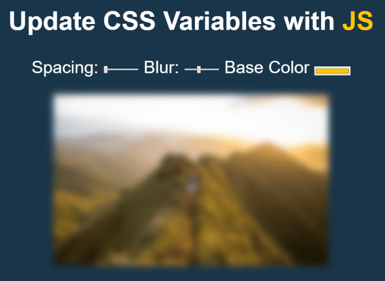

【JS30】CSS Variables
03 — CSS Variable

主題
用 JavaScript 和 CSS 讓可以即時調整畫面，模糊、放大、調色。
步驟
Step1. 新增變數
先抓取input的CSS
Step2. 監聽事件
給每個input添加監聽事件
事件發生後，改變property
備註
CSS 濾鏡參考 filter
style.setproperty
1 | style.setProperty('padding', '15px'); /* 等同於 */ |
:root 常用於聲明全局
CSS ：
1 | :root { --color: #fff; } |
dataset
用 dataset.* 可以取出對象的 data-* 屬性，也等同於 getAttribute
1 | <div id="test" data-no="123"></div> |
如何用 JavaScript 改變 CSS 屬性值？
在 JavaScript 中 document.documentElement 即代表文檔根元素。所以要改變全局的 CSS 變量，可以這樣寫：
1 | document.documentElement.style.setProperty('--base', '#fff'); |
- Post title：【JS30】CSS Variables
- Post author：Neil Yang
- Create time：2019-05-13 00:00:00
- Post link：https://des86532.github.io/2019/05/13/JS30/JS30-css-variables/
- Copyright Notice：All articles in this blog are licensed under BY-NC-SA unless stating additionally.